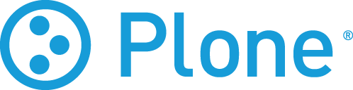

Blog
Microsoft sagt Domain-Trittbrettfahrerern den Kampf an
Mit einem neuen Programm will Microsoft den sogenannten Domain- Trittbrettfahrern das Leben schwerer machen. Die Trittbrettfahrer machen sich Tippfehler von bekannten Domains zum nutzten und leiten die User so auf ihre Seiten weiter. Bekanntes Opfer dieses Phänomens ist auch Microsoft selber (Beispiel: http://www.microzoft.com).
Das Programm ist als Prototyp zu verstehen und zurzeit erst in englischer Sprache erhältlich.
Neues Plone-Logo enthüllt
Als einer der ersten Schritt im Re-Branding von Plone wurde das überarbeitete Logo enthüllt. Das Logo lehnt sich an das bisherig an, besticht jedoch durch "formale Reduktion" und eine prägnantere Farbgebung.

novell.com auf Plone
Novell, das auf Netzwerk- und Internetsoftware spezialisierte Unternehmen, setzt für den Webauftritt (www.novell.com) auf das Plone CMS. Nachdem in diesem Jahr bereits die CIA (Central Intelligence Agency) auf Plone umgestellt habt, zeigt sich damit einmal mehr, dass Plone für grössere Unternehmen und Organisationen äusserst attraktiv ist.
Der Entscheid der "Agency" spricht eindeutig für die Verlässlichkeit und Sicherheit1 des Plone CMS2.
http://www.novell.com/ https://www.cia.gov/
1 Der gesamte Auftritt der CIA scheint ja auch auf SSL zu laufen.
2 Das favicon.ico könnten wie dann bei Gelegenheit noch customizen...
Open Source in the Enterprise: Plone @ Novell
Die Präsentation auf plone.tv gibt einen Einblick in die Hintergründe der Migration von Novell auf Plone. Novell hatte eine ganze Reihe von proprietären CMS - wie TeamSite und Vignette - im Einsatz. Allerdings waren diese System kostspielig und nur mit grossem Aufwand an besondere Anforderungen anpassbar. Aus diesem Grund hat sich Novell für Plone entschieden und scheint damit ausgezeichnete Erfahrungen zu machen.
http://plone.tv/media/1838007412/view
Nachtrag: Ein weiteres interessantes Video befasst sich mit Themen wie High Availability, Load Balancing und Single Sign-On:
Open Source TV-Spot
IBM macht in eine Reihe von TV-Spots Werbung für Open Source im Allgemeinen und Linux im Speziellen.
Die Spots sind handwerklich sehr schön gemacht und auch inhaltlich gelungen. Leider wurden die Spots bisher nun in Grossbritannien ausgestrahlt.vvv
http://www-5.ibm.com/e-business/uk/linux/?tactic=106DF02W#see
Unser Bekenntnis zu Open Source und einen Überblick über Technologien, die wir einsetzen, finden Sie hier.
"Linux is Everywhere
The Future is Open
One day the child went east.
The next, west.
Then north.
And south.
Not everyone realized he was there,
Not everyone recognized his power.
He spoke every language.
He just seemed to fit in."